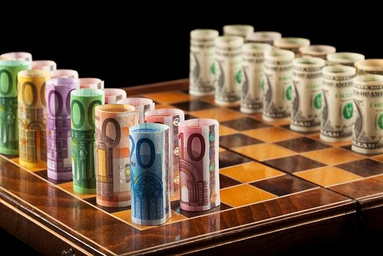
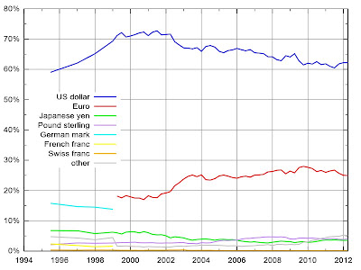
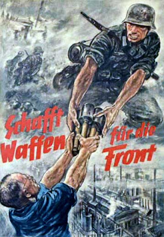

Si esto no es una economía de guerra, es la mayor cagada del mundo moderno.
-->
A veces me paro a pensar. Quiero entender hacia dónde va todo, pero siempre hay un barullo de muchas cosas ocurriendo en diferentes niveles que se solapan en un galimatías que no parece tener pies ni cabeza, principio ni fin, causa ni finalidad. Sin embargo, a veces sueño. Y en mi sueño todo aparece tan claro, tan inevitable, tan consistente y coherente... tan decepcionantemente estúpido como emplear el mundo en elevar castillos de naipes para erigirse dueño del más alto esperando que el de al lado muera en el intento. El sinsentido ineludible de vivir en un duelo de coches acelerando hacia el precipicio esperando que el otro se acobarde: todo para uno, o los dos al hoyo. Y, además, vivirlo en el asiento trasero: qué cutre.

E.E.U.U y U.E.E. peleando encarnizadamente por encumbrar $ o € para dominar la riqueza del mundo. La pelea viene de lejos, llegándose a las manos en la Segunda Guerra Mundial, pero es que hoy no se pueden permitir el lujo si quiera de hacer la guerra, un coste inasumible en la carrera de reforzar la moneda. Que tu moneda sea empleada como moneda de reserva internacional te convierte directamente en el rey del mambo. Durante las últimas cuatro décadas, el dólar estadounidense ha sido la moneda dominante en el mundo, pues casi todo el comercio internacional se ha realizado empleando dicha divisa con la finalidad de ahorrar las comisiones de cambio, ya todos la tienen. Hay dos razones principales para que tantos países se decantaran por el dólar y no por otra moneda: ofrecía solidez por estar respaldado por una nación con pocas expectativas de quebrar y porque elegir otra divisa te inscribía automáticamente en el Eje del Mal, con dramático desenlace. Esto es la gallina de los huevos de oro: todo el mundo desea tu moneda, te da petróleo, metales y lo que pidas a cambio de unos papeles que te resultan gratis. Quien controla la moneda de reserva tiene endeudamiento ilimitado porque puede imprimir dinero hasta que el resto del mundo se canse.

Composición de divisas mundiales para cambio internacional.
A los banqueros alemanes les salió mal la jugada y perdieron la Segunda Guerra Mundial, pero ésta vez volvieron a ver clara la oportunidad: el principal respaldo del dólar, el petróleo, el recurso más crucial en nuestro tiempo, comienza su declive tras el pico de producción mundial, previsto desde los 80 para un momento entre 2008 y 2016. Para entonces habrá un tal Euro que ha de presentar suficiente solidez como para aprovechar la maravillosa oportunidad de no ser menos confiable que el todopoderoso dólar y reemplazar el Viejo Dominio por el Nuevo Dominio, el Euro como primera moneda de reserva mundial. Pero, ¿cómo hacer fuerte al Euro? Con gente suficiente para empujarlo: aquí es donde entramos tú y yo. “Una Europa de todos”, “cuna y paraíso de la democracia y la libertad”... y todas esas tontadas que hemos oído a patadas con un himno fraternal de fondo. El primer paso es poner el dinero suficiente, luego, gente a trabajar por él. Esos dos pasos se dan juntos, pues crear Euros crea deuda. Cuando hay suficiente divisa, paras la máquina de imprimir y quedan las deudas, que no podrán ser pagadas, deudas que fueron recibidas con los brazos abiertos en los estados miembros bajo el pseudónimo de créditos baratos y que son colocadas en sus contribuyentes tan pronto como sea posible. Las hipotecas a precio de burbuja son maravillosas a tal efecto, así como la nacionalización de bancos podridos. La gente endeudada trabaja fantásticamente, no porque les dé superfuerza, si no porque trabajan por menos de la mitad de sueldo que un trabajador equivalente sin deudas. Mientras, puede ser muy beneficioso para la solvencia del estado vender sus instituciones e infraestructuras, que da liquidez y materializa la magia de que los usuarios paguen otra vez más por los servicios, ya que hay que volver a amortizarlos. Por otro lado, las organizaciones financieras, afines al proyecto del Euro como moneda de reserva, tienen derecho a ser depositarias de la riqueza de la Zona Euro, parasitando un 5% del flujo de dinero cada vez que los estados requieren financiación. Ese 5% es orientativo y hace referencia a la resta entre el 6% de intereses que paga un país apurado al banco privado y el 1% de intereses con que el este banco lo recibe del BCE: ¿magia, o chulería? Y una cosa más: la inflación es pecado. Merkel, del partido democristiano alemán, es fiel a su fe de que no puede salir un solo Euro de su banco central mientras no le hayan firmado los 26 restantes que no lo utilizarán en otra cosa que no sea sanear sus cuentas. Para no permitir sobrepasar el estricto umbral de inflación, cada Euro que sale del BCE lo hace al borde mismo de la muerte, con hordas de agentes económicos peleándose por la oportunidad si quiera de tocarlo. Porque el valor del Euro no puede bajar, la confianza no puede quebrantarse y el contribuyente europeo tiene la misión de comer una vez al día, pagar canon de inspiración y espiración, trabajar gratis por sostener cada estado miembro, cada grupo financiero en que se ensalza La Moneda Única. Además firma que lo hará de por vida y así lo harán sus hijos y los hijos de sus hijos. Si esto no es una economía de guerra, es la mayor cagada del mundo moderno.

Por su parte, el contrincante pelea por los últimos reductos del, antaño imprescindible, petróleo. Irán es muy malo. Por eso E.E.U.U. y sus socios nos lo recuerdan cada día varias veces. Sin embargo, es consciente de que en cuestión de petrodólares, el tiempo juega en su contra. Por dentro, siguen la misma carrera loca de transferir riqueza de los contribuyentes a los bancos, hedges funds y tal y tal... cargando las deudas de su batalla financiera a estudiantes, propietarios y pacientes. Por fuera, hirieron gravemente al enemigo atacando uno de sus puntos más débiles: Grecia. Goldman Sachs estuvo dentro como un caballo hueco de madera en una cuidad amurallada desde el comienzo, y las agencias de calificación dispararon cuanto fue posible. Y mucho credit crunch, que cuantos menos dolares lleguen a consumidores y empresas, más estarán dispuestos a hacer por conseguir un par de ellos, así son más valiosos. Me recuerda a una película donde un chulo daba jaco a sus empleadas al entrar en la empresa, pero poco tiempo después, ya sabéis cuánto les pedía a cambio de una pequeña dosis.
Destruir lo que uno es por dominar los escombros de tu vecino, esa es la fuerza que mueve nuestro mundo. Vaya una mierda. Podemos estar orgullosos.
Para finalizar, una cita de nuestro aún presidente, Mariano:
“Joderse es de gente seria”.
Más aquí:
Europeos del centro y la periferia, mercancía en manos de nuevos dueños
Petro-crack: nos frenan porque los cambios se les quedan grandes
Hemos vivdo por debajo de nuestras posibilidades
¿Soy más rico que Fernando I de Aragón?